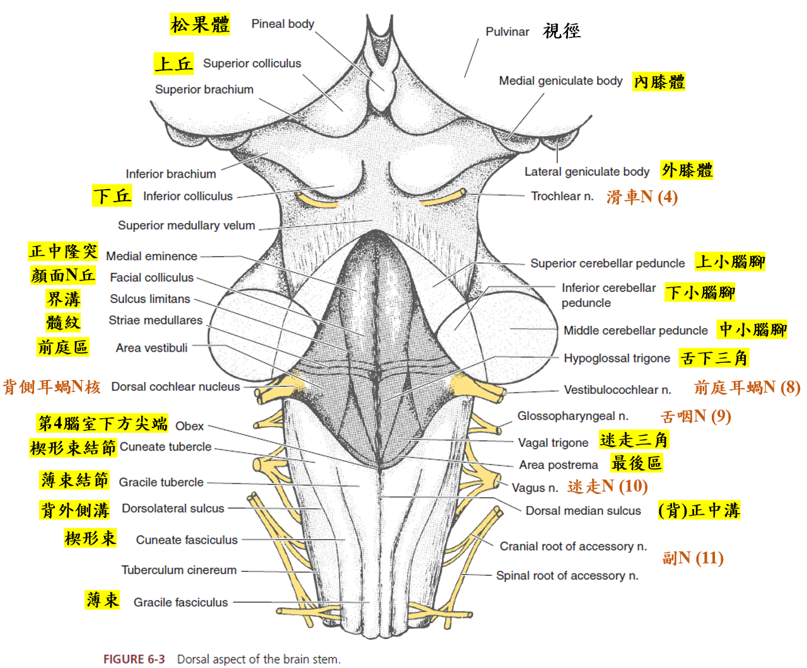

🧠 CNS-中、橋、延腦
腦幹概覽
12對腦神經核-分布
- 大腦：CN1
- 間腦：CN2
- 中腦：CN3,4
- 橋腦：CN5~7
- 橋/延交界：CN8
- 延腦：CN9~12
腦幹的重要神經傳導物系統
- 正腎上腺素(NE)系統：藍區/中腦外蓋區→丘腦/小腦/大腦皮質
- 多巴胺(dopamine)系統：
- ★mesolimbic pathway：中腦腹側蓋區→下視丘、杏仁核、海馬形成
- 功能：獎賞行為(reward behavior)、成癮(addiction)
- 疾病：思覺失調症Schizophrenia)
- mesocortical pathway：中腦腹側蓋區→前額葉、扣帶迴、內嗅皮質
- 功能：與動機、計畫、暫時性的行為組織及社會行為有關
- 疾病：思覺失調症(Schizophrenia)
- nigrostrial pathway：中腦黒質緻密部→基底核的紋狀體
- 功能：自主運動的調節有關， 如姿勢的維持，動作之執行與修飾
- 相關疾病：Parkinson’s disease(巴金森氏症)
- tuberoinfundibular pathway：下視丘弓形核→漏斗內側隆突(泌乳激素)
- ★mesolimbic pathway：中腦腹側蓋區→下視丘、杏仁核、海馬形成
- 血清張力素(5-HT)系統：縫核(raphe nuclei)
- 乙醯膽鹼(Ach)系统：巨細胞神經元(gigantocellular)
- 與定型運動功能(stereotyped motor functon有關
- 相關疾病：
- 躁症(mania)：NE上升
- 憂鬱症：5-HT下降
- 阿兹海默症：Ach下降
- 精神分裂症：DA上升
- 巴金森氏症：DA下降
- 乳漏症：DA下降
腦幹的神經核之一般排列
- 胚胎期位於腹側司運動之基底板(basalplate)繼續保持於腹側偏內
- 胚胎期位於背側司感覺之翼板(alaplate)向前向外移動至腹側偏外
- 一般排列由中線向外排列依序為：GSE→GVE/ SVE→ GVA/ SVA → GSA/SSA
備註
有比較好記的方法歡迎跟我說~
- 3-4-6-12→3-7-9-10/5-7-9-10-11→5-9-10/7-9-10→ 5-7-9-10/8
- 例如：舌下神經核→迷走神經背核/疑核→三叉神經核/孤立核→三叉神經核/耳蝸神經核


[近年愛考]腦幹的表面解剖學



[近年愛考]中腦(midbrain, mesencephalon)
★基本結構[考含什麼構造]
- 大腦莖(cerebral peduncle)
- 大腦腳(crus cerebri)：位中腦前方
→[重點]★大腦投射徑(皮質脊髓徑、皮質延腦徑)經中腦處
- 黑質(substantia nigra)：廣義基底核的一部分，和運動計畫有關；含黑色素(melanin)
- 緻密部(compacta)：★分泌dopamine→投射至被殼(putamen)
- 網狀部(reticularis)：分泌GABA→★投射至丘腦(獎賞&成癮)、上丘(視覺反射中樞、掃視)、大腦莖橋腦核(pedunculopontine nu.)
- 蓋(tegmentum)：
- 紅核(red nucleus)：含豐富血管
主要與皮質紅核徑 & 紅核脊髓徑有關，主司精細運動的協调
- 大腦導水管(cerebral aquaous duct= aqueduct of Sylvius)：
位中腦中央，連接第3腦室與第4腦室
- ★中央灰質=導水管周圍灰質(periaquaductal grey matter)：
其神經纖維能釋出內生性嗎啡，與內源性止痛有關
- 前蓋核/頂蓋前區(pretectal nucleus)：緊臨上丘，為★(瞳孔)光反射中樞
- 紅核(red nucleus)：含豐富血管
- 大腦腳(crus cerebri)：位中腦前方
- 頂蓋(tectum)：位中腦背側，具★四疊體(corpora quadrigemina)；源自胚胎期翼板(alaplate)
- ★上丘(sup. colliculus)×2：視覺反射中樞(跟光反射中樞不一樣)
→目視搜尋(saccade)、視覺軀體反射(visual body reflex)中樞
- 下丘(inf. colliculus)x2：聽覺反射中樞
- 上小腦腳交叉(decussation of sup.cerebellar peduncle)緊臨下丘
- ★上丘(sup. colliculus)×2：視覺反射中樞(跟光反射中樞不一樣)
- 腦神經核：CN3、CN4神經核位於中腦
- ★動眼N運動核(CN3)：位於上丘的高度，神經纖維經紅核，自★大腦腳間凹(interpeduncular fossa)離開中腦腹面，不交叉
備註
趙神原文是位階，但我猜應該是level直翻。意思應該是跟上丘等高的概念
[補充]大腦腳間凹(interpeduncular fossa)圖

- 滑車N運動核(CN4)：位於下丘的高度，神經纖維環繞大腦導水管、經上髓、自兩下丘間離開中腦背面，並立即交叉至對側（唯一交叉）
- 動眼N副核(accessory oculomotor nucleus)/Edinger–Westphal nucleus(EW核)：
- 副交感神經節前神經元
- 經過★睫狀神經節→支配虹膜括約肌和睫狀肌的運動
- ★動眼N運動核(CN3)：位於上丘的高度，神經纖維經紅核，自★大腦腳間凹(interpeduncular fossa)離開中腦腹面，不交叉
腦幹的六條pathway[考到爆，近年也愛考]
內緣(側)蹄系(medial lemiscus)：傳導軀幹/四肢之輕觸、本體感覺
- 薄核、楔形核@延腦→丘腦腹後核外側(VPL)之神經纖維(二級神經元)
- 内弓形束(int. arcuate)：薄核、楔形核交叉至對側延腦之水平纖維，續接鉛直向上至丘腦之內緣蹄系
脊髓蹄系(spinal lemniscus)：傳導軀幹四肢之觸、壓、溫、痛
- 脊髓後角細胞→丘腦腹後核外側(VPL)神經纖維(2°神經元)
三叉蹄系(trigerminal lemniscus)=腹側三叉丘腦徑+背側三叉丘腦徑
腹側三叉丘腦徑(ventral trigerminothalamic tract)：
→傳導臉部觸壓、輕觸、本體感覺、溫、痛覺
- 三叉神經脊髓核、三叉神經橋腦核(主核)→丘腦腹後核內側(VPM)神經纖維(2°神經元)
背側三叉丘腦徑(dorsal trigerminothalamic tract)：
→傳導臉部觸壓、輕觸、本體感覺 (沒有溫痛)
- ★三叉神經橋腦核=主核(principal sensory nu.)→丘腦腹後核內側(VPM)神經纖維(2°神經元)
外緣(側)蹄系(laterallemniscus)：傳導聽覺
- 上橄欖核→中腦下丘之神經纖維(4°神經元)
★內側縱束(med. longitudinal fasciculs)：
→傳導平衡感覺、★調控眼球垂直、水平共軛運動
- ★[108-1]前庭眼球反射(vesticulo-ocular reflex)：★前庭神經核→CN3, 4, 6神經核之神經纖維(2°神經元)
- ★位於第四腦室/大腦導水管之腹面近中線處
- 傳送門：眼球水平共軛運動
特殊感覺-視覺


橋腦(pons) [93後國考沒考過]
- 為神經纖維徑通過之處：
- 上下徑：連接中腦以上及延腦以下的上升徑、下降徑
- 左右徑：連接左、右小腦(經中小腦腳)之神經纖維徑
- 中樞：
- 橋腦上方：呼吸調節(pneumotexic)中樞→刺激則導致呼氣(停止吸氣開始呼氣)
- 橋腦下方：吸氣痙攣(apneustic)中樞→刺激則導致吸氣
- 橋腦及延腦背側：具第4腦室(菱形)
- 橋腦核(pontine nu.)：大腦皮質(cortico)-橋腦(ponto)-小腦(cerebellar)徑
- 腦神經核：CN5, 6, 7之神經核主要位於橋腦

延腦(medulla oblongata)
延腦-錐體(pyramid)：位延腦正前方
- 皮質脊髓徑(錐體徑運動)通過：執行隨意性運動
- 側皮質脊髓徑(佔85%)：於錐體下方形成錐體交叉(decussation)→左右對控(控制對側運動)
- 皮質脊髓徑：大腦皮質→放射冠→內囊→大腦腳→延腦錐體→脊髓前角細胞
延腦-弓形核(arcuate nu)：位延腦前方，錐體內側
- 皮質弓形核小腦徑(cortico-arcuato-cerebellar)：大腦皮質一延腦弓形核→小腦[經下小腦腳]
→與運動調節有關- 前外弓形束(ant. ext. arcuate tract)：弓形核→對側小腦
- 弓形小腦徑途經第4腦室腹側之髓紋(striae medullares)
★延腦-薄核(gracil)/楔形核(cuneate)/副楔形核(accessory cuneate)：位延腦尾端之後方
- ★薄核(內側)：主要傳導下肢之本體、振動、輕觸覺(2神經元)
- ★楔形核(外側)：主要傳導上肢之本體、振動、輕觸覺(2神經元)
- 內弓形束(intarcuate)：薄核、楔形核交叉至對側延腦之水平纖維，續接鉛直向上★至丘腦之內緣蹄系
- 副楔形核(lateral cuneate nu.)(最外側)：主要傳導上肢之下意識本體感覺(2神經元)
- 楔形核小腦徑(cuneo-cerebellar tr.)=後外弓形束(post. ext. arcuate fiber)：
★副/外楔形核→同側小腦(相當於脊髓之背核經後脊髓小腦徑至同側小腦)
備註
- 講post. ext. arcuate fiber，沒有搜尋到有paper用arcuate tract的(只有趙神有)
- 是副楔形核不是楔形核，有考過
- 楔形核小腦徑(cuneo-cerebellar tr.)=後外弓形束(post. ext. arcuate fiber)：
延腦-橄欖核複體(olivary nuclear complex)：位延腦前側方
- 上橄欖核：傳導聽覺(4°神經元)
- [重要]功能：分析聲音遠近和方向
- [重要]下橄欖核(最大核)：與小腦聯络(經下小腦腳)；主司平衡(主要)
- 副橄欖核(accessory)：與小腦聯络(經下小腦腳)；主司平衡
- 下橄欖核、副橄欖核主要將本體感覺傳送至→小腦栓狀核(emboliform)/球狀核(globose)/室頂核(fastigial)
延腦-[重要]前庭核複體(vestibularnuclearcomplex)：與平衡、肌肉張力有關
- 包括上、下、內、四個前庭核
- 位於第四腦室底的下方(橋/延腦交界)
- [重要]外前庭核(前庭核複體最大最主要之神經核)：
- 其含大型神經元，具最長軸突、最廣樹突
- 為前庭脊髓徑之起點
- 去大腦強直(decerebrate rigidity)：四肢皆伸展
- 病灶在中腦以下，大腦&間腦皆失去作用
- 前庭脊髓徑之功能↑↑(失去平時大腦的抑制)→肌肉張力過高
- <cf>去大腦皮質(decorticate rigidity)：上肢屈曲，下肢伸展
- 病灶在中腦以上

延腦-耳蝸神經核(cochlear nucleus)：與聽覺傳導有關
- 前耳蝸神經核(=腹耳蝸神經核)
- 後耳蝸神經核(=背耳蝸神經核)
延腦-[重要]菱形體(trapezoid body)：與聽覺傳導有關
- 由腹耳蝸神經核交叉投射至對側上橄欖核的神經纖維構成
延腦-[重要]第四腦室底(floor of 4th ventricle)=★[110-2]菱形窩(考內含物)
- 以正中溝(median sulcus)分左、右兩半；再各以界溝(sulcus limitas)分內、外側隆起(eminence)
- 界溝吻端(上方)為藍區(locuscus ceruleus)：分泌NE
- 以髓紋(striae medullares)分上、下兩半；髓紋約位於橋、延腦分界
- 上半：★[110-2]顏面小丘(facial colliculus)、前庭區(vestibular area)
- 顏面小丘正下方為★外旋(CN6)神經核，顏面N(CN7)運動核之神經纖維跨越其上
- 下半：★[110-2]舌下三角(hypoglossal △)、★[110-2]迷走三角(vagal △)
- 上半：★[110-2]顏面小丘(facial colliculus)、前庭區(vestibular area)

延腦-最後區(area postrema)
- 此處血管不具血腦屏障(BBB)
- 化學接受器發動區(chemoreceptor trigger zone, CTZ)：嘔吐中樞
- 接受血液中化學物質刺激(如apomorphine, digoxin, theophylline)等之刺激→引發嘔吐
延腦：生命中樞(vital center)
- 心跳中樞(促進/抑制)：調控心跳
- 呼吸(節律)中樞(medullary rhthmic)：調控呼吸
- 血管運動中樞(vasomotor)：調控血壓
延腦：吞嚥中樞、嘔吐中樞、咳嗽中樞、打噴嚏中柜、打嗝中樞
- 興奮嘔吐中樞的刺激：上消化道刺激(經迷走N輸入)、間腦(視覺)、綠葉系統(嗅覺)、前庭系統(平衡)、化學接受器發動區(化學物質)等
[110-1題幹&補充]腦幹損傷症候群
| 疾病 | ★內側延腦症候群 (medial medullary syndrome) alternating hypoglossal hemiplegia | 外側延髓症候群 lateral medullary syndrome (Wallenberg’s syndrome) | Weber’s syndrome |
|---|---|---|---|
| 病因 | 椎A或前脊髓A至延腦內側的分⽀阻塞 ⇒錐體、內側蹄系&⾆下神經(核)損傷 | 椎A或後下⼩腦A供應延腦外側的分⽀阻塞 ⇒脊髓丘腦徑、三叉脊髓核、疑核&交感神經損傷 | 後⼤腦A阻塞造成⼤腦腳及中腦吻端損傷 ⇒⽪質脊髓徑、動眼神經(核)損傷 |
| 症狀 | 1. 錐體 → 對側肢體癱瘓 2. 內側蹄系 → 對側身體輕觸、本體感覺喪失 3. ⾆下N → 同側⾆部肌⾁癱瘓萎縮，⾆頭朝患側傾斜 | 1. 脊髓丘腦徑 → 對側身體痛、溫覺喪失 2. 三叉脊髓核 → 同側臉部痛、溫覺喪失 3. 疑核 → 對側咽喉部肌⾁癱瘓，聲⾳沙啞、吞嚥困難 4. 交感神經纖維 → 同側Horner’s syndrome(瞳孔縮⼩、眼瞼下垂、無汗) | 1. ⽪質脊髓徑 → 對側肢體癱瘓 2. 動眼神經＆核→ 同側眼瞼下垂、瞳孔擴張(無光反射）、斜視 |
[近年來超級重點]網狀結構(reticular formation)：★貫穿整個腦幹(中橋延)
- 位於腦幹，由灰質及白質交織而成(部份位於脊髓&間腦)
- 網狀結構內神經元最明顯特微：具較長且高度分枝之樹突，接受多方刺激
網狀結構-功能：4功能(清醒、睡眠、肌肉張力、調控疼痛)
- ★調節意識清醒程度：
- 網狀結構接受各種非専一性(nonspecific)感覺刺激，向上經網狀活化系統(RAS)廣泛地刺激大腦皮質，以達喚醒(arousal)功能
- [重要]RAS(reticular activating system)：網狀結構→丘腦(層內核)→大腦皮質
(維持清醒的三大要素)
- ★調節睡眠周期：非快速動眼睡眠(NREM)/快速動眼睡眠(REM)
- 下橋腦的縫核(raphe nuclei)：分泌★serotonin(5-HT)
- 上橋腦的藍斑(locus ceruleus)：分泌★★正腎上腺素(NE) [tip：逢5必敗(斑)]
- 與睡眠/清醒相關之神經傳導物質：5個
NE 5-HT Ach Histamine GABA 清醒 ↑ ↑ ↓ ↑ ↓ NREM x x x ↓ ↑ REM ↓ ↓ ↑ x x - 清醒&REM：NE, 5-HT, Ach全相反
- 網狀脊髓徑(肌肉張力中樞)：調節肌肉張力(muscle tone)
- 可由單一軸突分出側枝，分別終止於脊髓頸胸腰段之運動神經→完成★上/下肢協调運動
- 調控疼痛：與慢速痛(slow pain)之感受、內生性止痛有關

📖 書本補充：與筆記不同或筆記沒寫到的地方
⚠️
以下為對照書本後整理，筆記原文未更動。標「筆記 vs 書」的是兩邊寫法不同、建議回頭確認的地方。
網狀形成：神經傳導物質（p.443）
- 書的表格（神經元位置／代表構造／功能）：
- 血清素：腦幹中線區的縫核；功能＝下行的痛覺控制、睡眠。
- 正腎上腺素：橋腦及延髓的外側區，藍斑核，另有孤立核、迷走神經背核；功能＝注意和警戒。
- 多巴胺：中腦，黑質緻密部、腹側頂蓋區；功能＝啟動運動、積極與認知作用。
- 乙醯膽鹼：網狀形成及部分基底核，代表構造＝Meynert 氏基底核；功能＝睡眠—清醒週期、學習和記憶（筆記只寫「巨細胞神經元，與定型運動有關」）。
- 書的功能對照表：
- 清醒：上行網狀活化系統（ARAS），位置是藍斑核附近的乙醯膽鹼性神經元。
- 止痛：導水管周圍灰質（PAG）→縫核大核（nucleus raphe magnus，延髓）。
- 眼球的水平共軛運動：中央旁橋腦網狀纖維（PPRF），橋腦。
- 臟器的感覺：臂旁核（parabrachial nucleus），在上小腦腳附近。
- 運動控制：網狀脊髓徑，起自橋腦和延髓吻端網狀形成的內側區。
- 呼吸、心跳及血壓中樞：延髓。
- 書的提示：腦幹考題除了腦神經核外，最重要的是網狀形成的功能，以及各神經核所分泌的神經傳導物質。
- 考題補充：網狀系統仍含有神經細胞本體（只是不含腦神經的神經核）（102-2-2）。
雙向神經徑（p.445）
- 中央蓋膜徑（CTT）：上行＝孤立核的味覺纖維→VPm（傳遞味覺）；下行＝紅核→下橄欖核（再經攀爬纖維連到對側小腦）。書的提示：CTT 到下橄欖核的纖維位於下橄欖核的背面。
- 內側縱束（MLF）：上行＝連接 CN III、IV、VI 的神經核（前庭眼球反射，協調頭部和眼球運動）；下行＝內側前庭脊髓徑，影響頸部肌肉及頭部運動。書的提示：MLF 走在最接近中線處。
- 背側縱束（DLF）（筆記沒寫）：上行＝網狀形成→下丘腦；下行＝下丘腦→網狀形成及脊髓的交感、副交感節前神經元；功能＝下丘腦影響臟器的感覺及運動。
- 內側前腦束（MFB）：上行＝腦幹及下丘腦→中隔區和前穿孔質等前腦區；下行＝下丘腦→腦幹及脊髓的自主神經核；功能＝愉悅的感受。
主要下行路線（p.446）
- 書的表格（起點／是否交叉／功能）：
- 皮質脊髓：第4、6區等皮質；部分交叉；控制脊髓下運動神經元，主管有意義的熟練運動。
- 皮質腦幹（皮質延髓）：同上；書的表格寫「不交叉」；控制腦神經的運動神經元（CN III、IV、VI 除外）。Claude 註：皮質延髓徑一般是兩側（交叉＋不交叉）都有，書上考題 107-1-15 也說咀嚼肌的上運動神經元來自兩側大腦半球；表格的「否」宜理解為「不是單純交叉」。
- 前庭脊髓（外側前庭核）：不交叉；興奮背部及下肢的伸肌（抗重力肌），參與姿勢調節。
- 內側前庭脊髓（內側前庭核）：交叉；影響頸部肌肉以維持頭部姿勢。
- 網狀脊髓（網狀形成）：部分交叉；另一條控制脊髓運動神經元的路線，管不需持續意識的運動（如姿勢維持）。
- 紅核脊髓（紅核）：交叉；在人類很小。
- 頂蓋脊髓（四疊體）：交叉；可能與頭部的反射性轉動有關。
- 書的提示：前庭脊髓徑和網狀脊髓徑終止在脊髓的腹側索；紅核脊髓徑終止於外側索。
皮質脊髓（錐體）徑（p.447–448）
- 起源：主要運動皮質約 1/2（一部分來自 Betz 細胞）、運動前及輔助運動皮質約 1/3，其餘來自體感覺皮質（考題 107-1-15：額葉與頂葉皆可發出皮質脊髓徑）。
- 體位分層：運動侏儒圖上下肢在最內側（前中央旁小葉）、頭部在最外側。
- 路線：放射冠→內囊後肢→大腦腳的中間 3/5→橋腦基部→延髓錐體交叉。
- 脊髓內：
- 皮質脊髓外側徑：交叉（85%），走外側索，終止於前角及中央灰質的運動神經元（一部分到背角），支配肢體肌肉。
- 皮質脊髓腹側徑：不在錐體交叉（15%），走前索，支配中軸肌肉。書的提示：這些纖維到了脊髓仍會交叉到對側，支配腹角內側的運動神經元。
- 考題補充（110-1-1）：內側延腦症候群會出現對側肢體無力＋同側舌頭肌肉無力（舌下神經核發出的纖維不交叉），與筆記表格一致。
📝 書中歷屆考題（點選答案作答）
102-2-2p.444
下列有關網狀系統 (reticular formation) 之敘述，何者錯誤？
💡 網狀系統不包含腦神經的神經核，但仍含有其他神經的細胞本體。
103-2-5p.444
下列有關網狀系統 (reticular formation) 之敘述，何者錯誤？
106-1-13p.444
有關網狀結構 (reticular formation) 核群，下列何者以正腎上腺素 (norepinephrine) 為主要神經傳遞物質？
106-2-2p.444
藍斑核 (locus coeruleus) 神經元釋放下列何種神經傳導物質？
110-1-16p.444
下列何者為痛覺調控之重要構造？
💡 導水管周圍灰質有下行纖維，可抑制痛覺訊息往上傳。
112-1-1p.445
腦幹內的蓋膜中央徑 (central tegmental tract) 主要由連結下列那兩者間的神經纖維組成？
💡 中央蓋膜徑連接紅核和下橄欖核，再經橄欖小腦徑（攀爬纖維）到對側小腦。
104-1-1p.449
下列有關大腦皮質運動區的敘述，何者錯誤？
💡 兩側大腦皮質都會發出下行纖維支配下運動神經元。
107-1-15p.449
有關運動系統之敘述，下列何者錯誤？
💡 前庭脊髓徑負責維持姿勢、對抗地心引力，支配的是伸肌群。
109-2-1p.449
有關中樞神經系統內下行徑路的敘述，下列何者錯誤？
💡 人類的紅核脊髓徑很小，功能不明。
110-1-1p.450
右邊延腦內側因梗塞性中風而損傷，造成內側延腦症候群 (medial medullary syndrome)，下列何者最可能出現？
💡 損傷及錐體（其下有錐體交叉）→對側肢體無力；延髓腹側的舌下神經核亦受損，其纖維不交叉→同側舌肌無力。
111-1-4p.450
下列何者受刺激時，會造成同側身體伸肌 (extensor muscles) 收縮，屈肌 (flexor muscles) 鬆弛？
💡 伸肌收縮、屈肌鬆弛以維持姿勢，是外側前庭脊髓徑的功能。